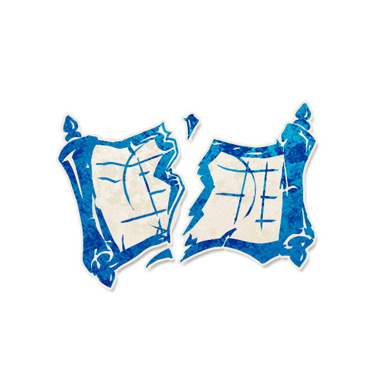

群星：地平论者

角色配置
- 角色类型：外来者
[圆桌在两名相邻玩家之间裂开，恶魔得知并可以重新选择这个裂隙在哪]
以上配置来自最终 JSON 合集；以下保留原文档说明（如有）。
背景故事
“他们嘲笑我，说麦哲伦的舰队早已绕过了世界的尽头，库克船长的航海日志写满了圆的证据。维多利亚时代的百年航行根本就是愚民的骗局！我知道真相——万物必有尽头，那尽头是一道冰墙，是造物主设下的屏障，是凡人不该逾越的边界。你们宣扬正统，如今在桌前把酒言欢，可谁知道圆桌有无裂缝，人心又有无嫌隙？哪有什么不可打破的圆，不过是缝合的谎言。”
角色作者
黑星
角色能力
[圆桌在两名相邻玩家之间裂开，恶魔得知并可以重新选择这个裂隙在哪]
角色简介
两个座位之间产生裂缝，裂缝的两端视作不相邻，可以理解为圆环在这里断开，两端成为了头和尾。
●裂缝放置在两名玩家之间，这两名玩家不再视为相邻。任何依赖相邻关系的能力均把这两名玩家视为不相邻。
●恶魔在首个夜晚可以选择将裂缝移动到任意一对相邻玩家之间。
范例
小明是地平论者。游戏设置时，说书人在1号和2号玩家之间放置了裂缝。1号玩家是共情者，由于靠近2号的一侧存在裂缝，共情者无法检测到2号，他的正确信息为1（仅检测到另一侧的邻座）。当晚，混沌选择刀了1号玩家，但由于1号和2号之间不相邻，混沌的相应效果不会触发。
小红是地平论者。某夜，骨雕选择从1号玩家开始顺时针飞行，在下一夜骨雕继续顺时针飞行，但由于1号和2号之间存在裂缝，骨雕无法越过裂缝，当晚仍然停留在1号头上，卡住了。与此同时，风水师开始获取信息，当信息路径触及裂缝时，信息戛然而止。
运作方式
在游戏设置时，说书人选择两名相邻的玩家，在他们之间放置"裂缝"标记。这两名玩家不再相邻，圆桌在此处断开。
在首个夜晚，唤醒恶魔，指向裂缝标记，告知恶魔裂缝的当前位置。随后让恶魔选择是否移动裂缝。若恶魔选择移动，则让恶魔指向任意一对当前相邻的玩家，将裂缝标记移动到该位置。原位置的两名玩家恢复相邻，新位置的两名玩家不再相邻。
若地平论者死亡，裂缝标记仍然保留。
提示标记
裂缝（放置于两名不再相邻的玩家之间）
规则细节
●共情者等需要检测相邻玩家的角色，若其邻座存在裂缝，则无法检测到裂缝另一侧的玩家。
●混沌、诺-达鲺、赶尸人等能力触发条件与相邻有关的角色，若其目标与自身之间存在裂缝阻隔，则相应效果不会触发。
●蛊雕等具有传递、移动能力的角色，若其移动路径触及裂缝，会在裂缝前停止，如同被"截肢"。
●等需要沿圆环依次获取信息的角色，若其信息路径触及裂缝，信息会戛然而止。
●首夜唤醒恶魔的行动顺序始终位于第一。
●如果剧本中存在多个影响相邻关系的角色或效果且存在矛盾，由说书人决定其优先级，但裂缝作为基础地形效果通常应优先于临时性的相邻改变。
角色信息
●英文名：
●角色类型：外来者
●角色能力类型：